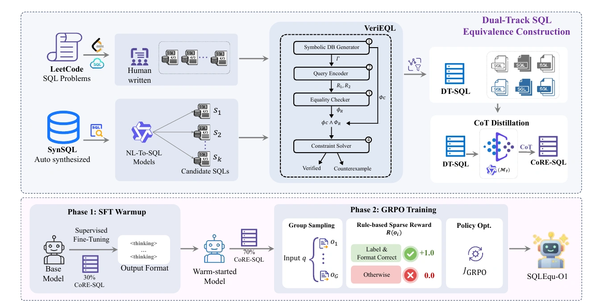
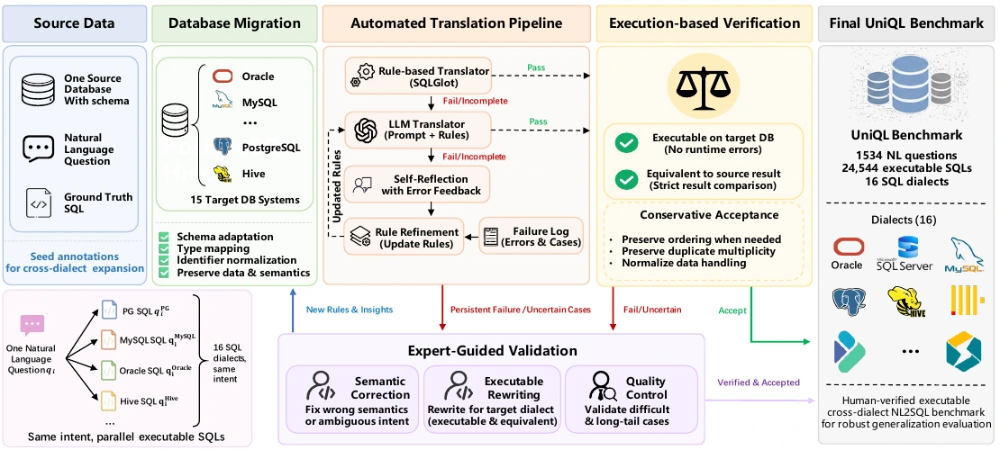
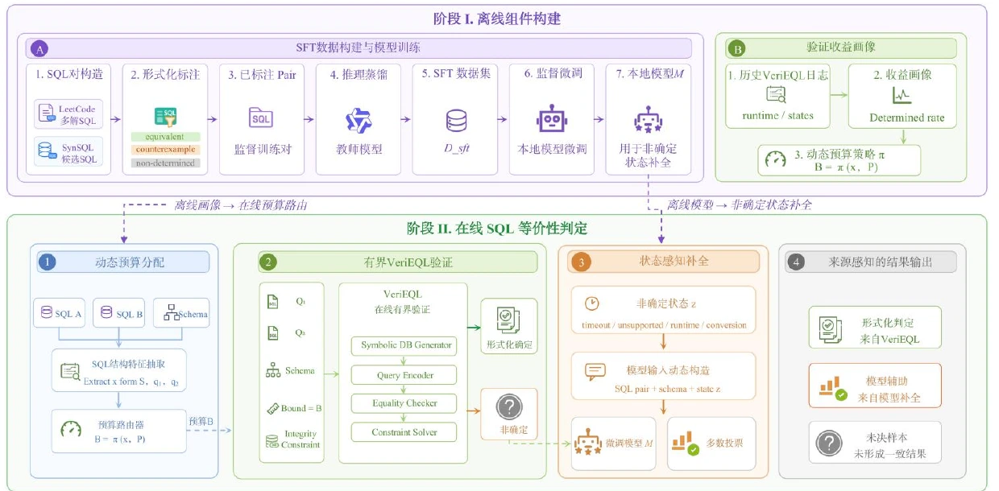

M.01
硕士研究生
2027 届硕士研究生 · 河南大学软件学院
研究 SQL 语义等价、跨方言 Text-to-SQL 与可验证推理，并将多智能体方法落到工业模型优化和金融科技系统中。
00 / PROFILE
教育经历构成研究与工程的底座；竞赛和实践记录了把想法推进到可验证结果的过程。
硕士研究生
本科
AWARDS / 09
第十六届全国大学生金融科技创新大赛全国二等奖（河南省第一名）
“互联网+”河南省赛银奖
“挑战杯”河南省赛铜奖
一等学业奖学金 × 2
人工智能创新创业大赛一等奖
第六届创新英语挑战赛二等奖
河南大学大学生创新大赛二等奖
河大杯羽毛球比赛第六名
大学生计算机设计大赛优秀志愿者
01 — 06 / SELECTED WORK
向下滚动时，右侧语义核心会在六个章节中改变结构：从模型优化闭环，到形式化验证、跨方言评测与金融科技 Agent。

FORMAL LABELS / SFT / GRPO
16 DIALECTS / EXECUTION FEEDBACK
YIELD-AWARE ROUTING / LOCAL SLM阿里-银泰星-深象智能
参与天工模型自动优化系统研发，将工业视觉模型从 Baseline 建立到 Candidate 复核的迭代过程组织为可追踪的 Study。Planner 综合历史 Trial、外部检索和数据、超参、结构三类专家意见规划实验；ClearML 串联训练、测试与模型归档，Analyst 在隔离上下文中独立复核，最终由人工决定是否 Promote。
系统以 Study 为实验边界：Human 定义目标与发布门槛，Planner 读取历史 Trial、Family Memory 和检索证据，三个领域专家分别提出数据、超参和结构建议。Tool Dispatcher 负责工具编排，Code Editor 只在白名单 Worktree 中修改代码，ClearML 承接训练与测试。
Evaluator 依据主指标和硬约束筛选候选，避免总分提升掩盖关键类别退化；Analyst 不读取 Planner 对话历史，在隔离上下文中复核提升是否真实。只有通过指标、约束和独立审查的结果才进入 Candidate，正式模型仍由人工发布。
系统已用于烟火检测、风险行为检测、人体与头部属性识别等模型线，将约 25 天的人工分析、反复调参与验证周期压缩至 4-5 天；每个 Trial 均保留代码分支、ClearML 任务、模型 ID、指标与审查结论。
FORMAL SQL EQUIVALENCE
面向 SQL 等价验证训练可本地部署的轻量推理模型。方法不把有限实例上的执行一致或表面结构相似当作语义证据，而是用形式化标签、验证式推理蒸馏和可验证奖励学习等价与不等价的决策边界。
执行测试只能说明两条查询在有限数据库实例上结果相同，无法证明语义等价；VeriEQL 等 SMT 验证器面对深层嵌套、聚合与复杂关系组合时又容易出现状态空间爆炸。提示式大模型成本较高且输出不稳定，小模型则容易把关键词共现或结构重合学成捷径。
数据侧采用双轨构造：一条轨道挖掘 LeetCode 同题的人写多解，另一条由多个 Text-to-SQL 模型从 SynSQL 生成难负例。所有查询对由 VeriEQL 给出形式化标签，再蒸馏并筛选与标签一致的验证式推理，形成 60K 对 CoRE-SQL；训练采用 30% SFT Warm-up 与 70% GRPO。
在 Qwen2.5-Coder-1.5B 上，GRPO 将 LeetCode-Hard 的 GM 从全量 SFT 的 73.60 提升至 89.38；在来源隔离的 Calcite+Spider-DAIL 上取得 76.77 GM，两个测试集平均 GM 达 83.08。
CROSS-DIALECT TEXT-TO-SQL
UniQL 关注同一自然语言意图在异构数据库中的方言实现，而不是把不同数据库上的不相关样本混合比较。基准在 Schema 与数据内容对齐的前提下，为每个问题提供 16 种可执行 SQL。
现有 Text-to-SQL 基准长期集中于 SQLite，但真实数据库在类型系统、内置函数、标识符规则和执行语义上存在明显差异。若不同方言使用不同问题与数据，就无法区分模型究竟受困于问题本身，还是缺乏对目标方言的理解。
以 BIRD Dev 的 1,534 个问题为共同语义锚点，将原数据库迁移到 15 个目标系统。SQL 先由 SQLGlot 转换，失败样本再进入 LLM 翻译与最多三轮执行反馈修复；长尾样本由两名标注者独立校验，构建和评测均采用保守 EX。
最终得到覆盖 16 种方言的 24,544 条人审可执行 SQL。最佳模型平均 EX 仅为 54.63%，同一问题在全部 16 种方言上同时正确的比例最高只有 20.14%，说明单方言成绩不能代表跨数据库泛化能力。
FAILURE-AWARE SQL VERIFICATION
将 SQL 等价判定划分为形式化确定域与模型补全域：先依据历史运行画像估计不同结构查询的验证收益，只有当 VeriEQL 无法给出确定结论时，才由任务适配的本地小模型接手。
VeriEQL 给出的确定结论具有明确的形式化来源，但在复杂聚合、嵌套与方言函数上常出现 timeout、unsupported 或 conversion error。统一延长预算会让低收益样本持续占用求解时间，直接改用模型又会抹去形式化结论与模型判断之间的可信边界。
离线阶段从历史 VeriEQL 日志学习“SQL 结构—时间预算—确定率”的验证收益画像，并以来源隔离的形式化标签微调本地模型。在线阶段按边际收益动态分配预算，保留所有确定输出；仅对非确定区域调用模型并以 Self-Consistency@3 返回稳定多数结果。
在 412 对 Calcite+Spider-DAIL 域外样本上，FAR-SQL + Qwen2.5-SFT 达到 83.98 GM，较纯 SFT 提升 7.78 个百分点；未决率降至 0，平均耗时 13.97 秒，同时改善覆盖、均衡性和验证成本。
NL2SQL / CORRECTION / EQUIVALENCE
为 NL2SQL、SQL 纠错与 SQL 等价验证提供同一个可复现实验入口，把原本散落在各任务中的样本适配、数据库执行、结果比较和指标汇总收敛到统一流水线。
任务层只描述样本如何构造、预测 SQL 从何处读取以及目标结果如何取得；公共执行层统一负责连接数据库、运行查询、比较结果和聚合指标。模型、数据集与任务定义通过适配器接入，评测主流程不再随实验对象重复改写。
以 EX 为核心指标，在 Docker 中维护 MySQL、PostgreSQL 与 SQLite 的标准化环境并按任务自动切换；对执行结果、空值、顺序、异常与超时采用一致的数据结构和统计口径，使不同模型和数据集可以直接横向比较。
同一流水线覆盖多模型、多任务与多数据集实验，减少重复执行脚本和临时统计代码；新增任务主要集中在适配层，将一套新评测从天级准备缩短到小时级。
EVIDENCE-GROUNDED CREDIT REVIEW
面向企业贷款授信审查的辅助工作台，从材料盘点开始，依次完成财务指标计算、经营与还款来源分析、风险汇总、证据引用和报告自审计；系统提供审查依据，不替代人工审批。
以 Case 为数据边界，材料清单、文档解析和证据索引先形成统一上下文，再由企业画像、经营、财务、现金流、担保与外部风险 Agent 分工分析，Risk Summary 与 Credit Opinion 汇总审查意见。
统一接收 PDF、DOCX、XLSX、TXT 与图片，自动分类并对照授信材料清单标记缺口；财务指标采用规则计算，风险项保留来源文件与材料依据。Report Audit 检查免责声明、无证据风险和越权审批表述。
形成从多 Case 管理、材料盘点、多 Agent 分析到 Markdown、HTML、Word、PDF 报告导出的完整工作流。所有输出均定位为辅助审查，最终授信条件和审批结论保留给人工。
07 / PRODUCT BUILD
将电脑上的 Codex 会话延伸到手机浏览器：按项目查看历史会话、继续对话并实时接收执行进度，无需安装手机 App，也不需要在手机重复登录 ChatGPT。
产品演示视频
浏览本地会话，远程发送消息并调整模型、思考强度与权限
电脑端仅监听 127.0.0.1，中继负责转发端到端加密密文
16 位配对码配合电脑端确认，已配对设备可随时撤销
08 / TOOLCHAIN
从数据与训练，到 Agent 编排、实验基础设施和 AI 辅助研发。
编程与数据
Agent 与大模型应用
训练与推理
研究工程化
AI 辅助研发
09 / BEYOND WORK

阅读
READING
羽毛球
BADMINTON
游泳
SWIMMING
音乐
MUSIC